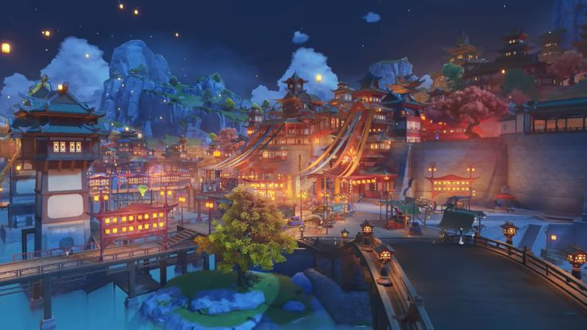
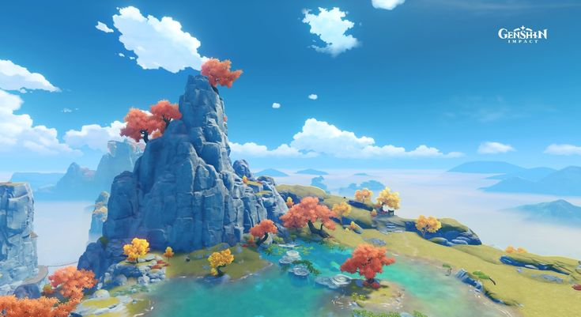
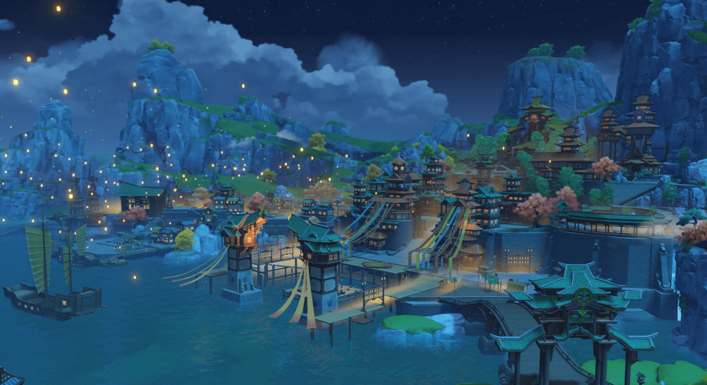
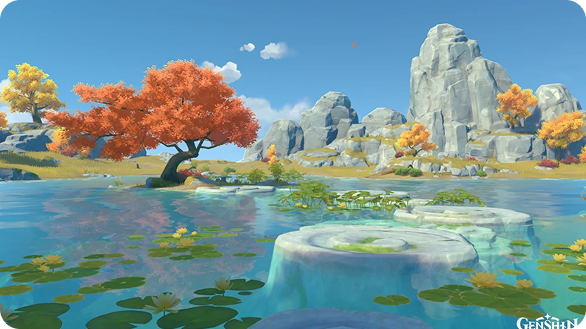
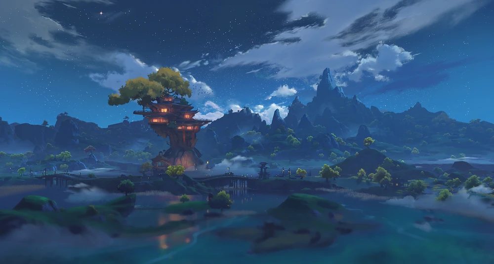

You love discovering local cuisine and want to experience everything from bustling street food stalls to elegant harbor-side dining.
"The Harbor of Stone and Commerce"
LIYUE
Duration: 4 days / 3 nights
15,000 PHP
per person
ABOUT LIYUE
Liyue, known as the Nation of Contracts, is a breathtaking destination where towering mountains meet sparkling harbors. Renowned for its rich traditions, bustling markets, and stunning stone landscapes, it offers travelers a unique blend of cultural heritage and natural wonder. From scenic peaks to vibrant waterfront districts, every corner of Liyue tells a story shaped by history and prosperity.


You’ll enjoy this trip if...
You are drawn to dramatic mountain landscapes, towering stone peaks, and some of the most breathtaking natural views in Teyvat.
You enjoy rich traditions and cultural festivals that bring centuries of history and folklore to life.
You love exploring vibrant markets filled with handcrafted goods, rare treasures, and unique regional specialties.
You never stop taking photos because every lantern-lit harbor, mountain path, and scenic overlook looks like a masterpiece.
YOUR STOPS
A closer look at the destinations waiting for you on this expedition.

LIYUE HARBOR
Liyue Harbor is a lively seaport where merchant ships, lantern-lit streets, and layered stone architecture meet the golden sea. Explore bustling docks and the hillside shops of Feiyun Slope, sample regional cuisine, and watch traditional boats pass beneath the harbor's dramatic cliffs. At sunset, the waterfront glows across the harbor, creating one of Liyue's most memorable views.

MT. AOCANG
Climb the majestic peak of Mt. Aocang for panoramic views of the surrounding landscape. This challenging hike rewards adventurers with breathtaking vistas of the sea, distant mountains, and the vibrant city of Liyue below. The trail winds through dense forests and open meadows, offering a diverse range of flora and fauna to observe along the way. Many travelers find the journey as rewarding as the summit itself.

WANGSHU INN
Nestled in the heart of Liyue, Wangshu Inn offers a unique blend of traditional architecture and modern comfort. Surrounded by lush gardens and traditional teahouses, this inn provides a tranquil retreat for travelers seeking to immerse themselves in the local culture. Enjoy the warm hospitality and delicious regional cuisine while taking in the serene beauty of your surroundings.
INCLUSIONS
- 4 days / 3 nights standard inn accommodation in Liyue Harbor with daily breakfast
- Guided walking and boat tours to Liyue Harbor, Mt. Aocang, and Wangshu Inn
- Welcome traditional Liyue culinary tasting banquet
- Regional travel permits and licensed Liyue Harbor branch tour guide
EXCLUSIONS
- Cross-border transit to and from Liyue Harbor
- Lunches, dinners, and specialty beverages not listed in the itinerary
- Personal souvenirs, Jade Chamber(floating palace) private viewing fees, and travel insurance (required)
SAMPLE ITINERARY
DAY 1 - Arrival & Liyue Harbor Promenade
Check-in at Liyue Harbor Branch, orientation briefing, afternoon walking tour of the commercial docks and Feiyun Slope, and welcome culinary tasting banquet.
DAY 2 - Ascent to Mt. Aocang
Morning excursion into the karst mountain peaks of Mt. Aocang, guided folklore tour of the adepti sanctuaries, and scenic valley viewpoints.
DAY 3 - Dihua Marsh & Wangshu Inn
Morning boat ride across Dihua Marsh(wetland river valley), afternoon heritage tour and observation deck visit at Wangshu Inn, and free evening at the inn's terrace.
DAY 4 - Harbor Market & Departure
Breakfast at the inn, free morning for local jade and tea shopping at Liyue Harbor, and checkout.
READY TO EXPLORE LIYUE?
Base price: 15,000 PHP per person
Duration: 4 days / 3 nights
Package code: LIYUE-02
FREQUENTLY ASKED QUESTIONS
What should I wear for the Liyue tour?
Breathable layers and sturdy, non-slip walking shoes are essential for climbing stone stairways around Liyue Harbor and the misty mountain paths of Mt. Aocang.
What should I bring with me?
Bring your LIYU-02 booking code, valid travel ID, a light rain jacket for mountain mist, a camera for karst viewpoints, and extra Mora (local currency) for harbor tea and jade souvenirs.
Is the tour suitable for families and children?
Yes, though families with young children or elderly guests should note the stepped stone inclines at Mt. Aocang; our boat transfer across Dihua Marsh (wetland river valley) offers a restful break.
How much walking is involved?
Moderate to brisk walking (about 3 hours daily), including stepped stone trails at Mt. Aocang and boardwalks around Wangshu Inn.
Can I explore on my own during the trip?
Yes. You have free leisure time on Day 3 evening at Wangshu Inn's observation terrace and Day 4 morning at Liyue Harbor’s commercial markets.
Are there any rules or protocols I should follow during the tour?
Respect all written contracts and merchant stalls in Liyue Harbor, stay on marked stone pathways around Mt. Aocang’s sanctuaries, and do not disturb wildlife in Dihua Marsh (wetland river valley).